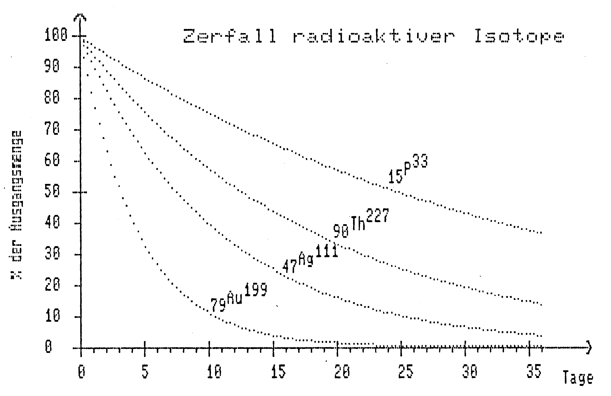

Hardcopy 80
Dieses Programm erweitert »Graphik-80« um die wichtige Möglichkeit, von dem 80-Zeichen- HiRes-Bildschirm des C 128 Hardcopies in verschiedenen Größen auf einem Epson FX-80 oder kompatiblen Drucker ausgeben zu können. Der Drucker kann über den seriellen Bus oder über die in dieses Programm eingebaute Centronics-Schnittstelle angesprochen werden.
Wie mittlerweile allgemein bekannt ist, kann der C 128 auch auf dem 80-Zeichen-Bildschirm hochauflösende Grafik darstellen. Die Auflösung von 640 x 200 Punkten (Pixel) ist geradezu eine Aufforderung, mit dieser im wahrsten Sinne des Wortes hochauflösenden Grafik zu arbeiten. Mit dem Programmpaket GRAPHIK-80 wurde es möglich, den 640 x 200 Punkte HiRes-Bildschirm des C 128 von Basic aus anzusprechen. Trotz der mächtigen Befehle, die damit zur Verfügung stehen, fehlt ein Befehl, der es einem ermöglicht, seine Kunstwerke zu drucken. Diesem Mißstand helfen wir mit dieser Programmerweiterung ab. Das Ergebnis unserer Arbeit ist ein Programm (Listing 1), das standardmäßig mit den folgenden Druckmodi aufwarten kann:
- Ausdruck in einfacher Größe
- Ausdruck in einfacher Größe (revers)
- Ausdruck in doppelter Größe
- Ausdruck in doppelter Größe (revers)
Andere Bildgrößen und Punktdichten kann sich jeder individuell in Basic mit Hilfe des Installationsteils des Basic-Laders zusammenbasteln. Selbstverständlich ist die Druckausgabe mit jeder benötigten Sekundäradresse, mit oder ohne Line-Feed (LF) oder auf Wunsch über die eingebaute Centronics-Schnittstelle möglich.
Der maschinennahe Basic- und Assembler-Programmierer sieht beim Überfliegen der Assembler-Routinen (Listing 2) sehr schnell, daß durch Zufügen von Steuerbytes weit mehr als 4 Bildformate (bis 255) vorgewählt werden können. Das Programm ist in der Lage, HiRes-Bilder beim Drucken in x- und y-Richtung bis zu dem Faktor 3 beziehungsweise 4 zu vergrößern. Dies ergibt im Extremfall ein Bild mit über 1,5 Millionen Pixel auf dem Drucker, die dadurch zustande kommen, daß das Bild nicht einfach gedehnt wird, sondern bei gleicher Auflösung wie auf dem Bildschirm werden durch geschicktes Vervielfachen der einzelnen Pixel mehr Punkte ausgegeben.
Vor dem eigentlichen Programmstart muß natürlich das Programm in den Computer eingetippt werden. Speichern Sie das Programm danach. Somit haben Sie immer eine Ur-Version, die Sie mit Hilfe des Installationsteils Ihren jeweiligen Bedürfnissen anpassen können.
Starten Sie jetzt das Programm mit RUN. Es erzeugt zuerst ein Maschinenprogramm im Speicher und arbeitet anschließend den Installationsteil ab. Für diesen Teil benötigt das Programm von Ihnen verschiedene Informationen, die es im Dialog anfordert.
Wenn Sie nicht mit der eingebauten Centronics-Schnittstelle arbeiten, sollten Sie der Wahl der Sekundäradresse besondere Bedeutung zukommen lassen. Eine falsche Angabe führt im allgemeinen zu »Buchstabensalat mit ASCII-Allerlei«. Da dieses »Menü« nur in den seltensten Fällen Liebhaber findet, setzen Sie bitte die Sekundäradresse ein, bei der Ihr Interface keine Umkodierung der Zeichen (von Commodore nach ASCII) vornimmt. Diese Adresse steht in dem Handbuch, das Ihnen mit dem Interface mitgeliefert wurde. Anderenfalls müssen Sie etwas experimentieren. Dazu ein Tip: häufig gebrauchte Sekundäradressen sind 1 (Data Becker, Wiesemann etc.) oder 4 und 12 (Görlitz).
Noch ein kleines Problem kann bei der Druckerinstallation auftauchen. Vielleicht stellen Sie beim Probedrucken fest, daß Ihr Drucker keinen Papiervorschub (Line-Feed) ausgibt.
Je nach Einstellung des Druckers und des Interfaces gibt Ihr Drucker nämlich automatisch nach jedem Wagenrücklauf (Return, CR) ein Line-Feed (LF) aus oder nicht. Es gibt nun zwei Möglichkeiten, den Drucker in diesem Fall zum korrekten Zeilenvorschub zu bewegen:
1. Schalten Sie in Ihrem Drucker den DIP-Schalter ein, der einen automatischen Zeilenvorschub nach jedem CR erzeugt, oder einfacher,
2.)wählen Sie im Installationsmenü die Ausgabe von Line-Feed. Das Programm sendet dann am Ende jeder Zeile LF und CR.
Wenn Sie mit den von uns eingestellten Werten für die Bildgröße einverstanden sind, benötigen Sie keine weiteren Eingaben. Die Frage des Programms nach Änderungen dieser Art können Sie also verneinen. Das Programm legt daraufhin das Maschinenprogramm gebrauchsfertig auf Diskette ab. Anderenfalls werden vom Programm weitere Eingaben zur Bildskalierung der vier möglichen Druckmodi angefordert, bevor es auf Diskette abgelegt wird. Die von uns gewählten Bildgrößen geben das Monitorbild fast unverzerrt auf dem Drucker wieder. Wenn Sie einen exotischen Monitor verwenden, der das Bildverhältnis stark verändert, sollten Sie andere Bildskalierungen austesten.
Die Centronics-Schnittstelle
Noch ein Wort zu Centronics: Diese Schnittstelle besticht durch ihre Sicherheit und Übertragungsgeschwindigkeit. Bei so großen Datenmengen, wie sie für ein HiRes-Bild benötigt werden (etwa 63 bis 250 Blocks auf der Diskette), fällt die Übertragungszeit schon deutlich ins Gewicht. Aber keine Angst, auch über den seriellen Bus reicht die Zeit für eine Hardcopy nicht für eine Kaffeepause! Der Drucker ist so gut wie ausgelastet, aber ein zugeschalteter Puffer kann nicht gefüllt werden. Anders mit Centronics: Hier kann leicht ein Teil des Bildes im Puffer zwischengespeichert werden. Wer ein Centronics-Kabel hat und diesen Vorteil ausnutzen möchte, sollte auf jeden Fall ein vorhandenes Interface ausschalten oder ausbauen. (Für genaue Angaben blättern Sie bitte in der Bedienungsanleitung des Druckers beziehungsweise Interfaces). Die Anschlußbelegung ist identisch mit der Belegung, die im »Komfortablen Treiberprogramm für Centronics-Drucker« (64'er 7/1984, Seite 110) vorgestellt wurde.
| User-Port-Pin | Signal |
|---|---|
| A (GND) | GND |
| B (FLAG) | BUSY |
| C (D0) | DATEN |
| D (D1) | DATEN |
| E (D2) | DATEN |
| F (D3) | DATEN |
| H (D4) | DATEN |
| J (D5) | DATEN |
| K (D6) | DATEN |
| L (D7) | DATEN |
| M (PA2) | STROBE |

Alle Kabel, auch die des seriellen Bus, sollten nur eingesteckt werden, wenn alle Geräte ausgeschaltet sind. Durch diese oft vernachlässigte Regel sind schon viele Bauteile zerstört worden. Zwar hält die von uns eingebaute Schnittstelle den Ein-/Ausgabe-Port auf Eingabe (der Port ist dann hochohmig; damit wird erreicht, daß möglichst nie zwei niederohmige Spannungsquellen aufeinanderstoßen können) und schaltet nur in dem Augenblick der Datenausgabe auf Ausgang, aber gegen einen Kurzschluß oder sonstige gewaltsame »Materialtests«, die bei unsachgemäßer Behandlung auftreten, ist natürlich auch dieser Schutz machtlos.
Aufruf des Programms:
Nachdem das Maschinenprogramm mit
BLOAD "HARDCOPY-80.M"geladen wurde, starten Sie die Druckerausgabe mit
BANK 0
SYS DEC("F000"),modusDa viele Programmierer jetzt aufstöhnen und »auch auf diesem Computer PEEK, POKE und SYS« hören lassen, möchten wir die Wahl des Aufrufes kurz begründen:
Bei dem Umschreiben von C 64-Programmen auf den C 128 gelang es uns nicht, den Befehl
SYS adresse, argument1, argument2
zum Laufen zu überreden. Erst ein Blick in das ROM brachte die Lösung. Commodore hat auch diesen Befehl überarbeitet und leistungsfähiger gemacht. Der komplette, im Handbuch nicht vollständig dokumentierte Aufruf lautet jetzt:
SYS adresse, akku, x-reg, y-reg, prozessorstatusDas heißt, der Interpreter übergibt an das aufgerufene Maschinenprogramm die Prozessor-Register. Alle Argumente können beliebige Ausdrücke sein. Es muß nur gewährleistet werden, daß das jeweilige Ergebnis zwischen 0 und 255, bei der Adresse zwischen 0 und 65535 liegt. Anderenfalls wird ein ILLEGAL QUANTITY ERROR ausgegeben.
Zum anderen wollten wir Ihnen nicht die Möglichkeit nehmen, komplette Grafik-Programme zu compilieren und sie dadurch noch schneller zu machen. Einbinden in Basic wäre zwar auch möglich, aber es ist unwahrscheinlich, daß jeder Compiler diesen Fremdbefehl auch verarbeiten kann. Zudem würde ein Einbinden die Interpreter-Geschwindigkeit herabsetzen, da ein weiterer Befehl berücksichtigt werden muß. Im Gegensatz dazu benutzen wir mit dem SYS-Aufruf einen auf dem C 128 standardmäßig implementierten Befehl, der mit einem guten Compiler ohne weiteres arbeiten sollte.
Aus diesem Grund lautet der Aufruf für das Programm wie oben bereits gezeigt:
BANK 0
SYS DEC("F000"),modusWen die Angabe in Hex stört, kann natürlich auch mit
BANK 0
SYS 61440,modusdie Hardcopy-Routine starten.
»modus« ist irgend ein arithmetischer Ausdruck, der einen Wert zwischen 1 und 4 liefert. Bei Werten größer als 255 weigert sich der Interpreter die Zahl in eine 8-Bit-Zahl umzurechnen, bei allen sonstigen nicht erlaubten Zahlen meldet sich das Programm mit ILLEGAL QUANTITY und zwei Piepstönen zurück. Die Ausgabe der Fehlermeldung läßt sich durch die TRAP-Anweisung abfangen. So ist es möglich, auf Fehler zu reagieren, um zum Beispiel vom HiRes- in den Textmodus zu schalten. Wird das Programm ordnungsgemäß verlassen, ertönt ein Piepston. Auf die Ausgabe einer optischen Meldung wurde verzichtet, um damit den HiRes-Bildschirm nicht zu zerstören.
Noch eine Anmerkung zum Schluß: In ausführlichen Tests des Programms mit verschiedenen Druckern und Interfaces hat sich herausgestellt, daß das Görlitz-Interface VC 2.6 für den Epson FX-80 nicht ganz korrekt mit dem Bus des C 128 zusammenarbeitet. Mit diesem Interface konnte zwar die unter »1« voreingestellte Bildgröße fehlerfrei ausgegeben werden, wählt man aber die unter »3« voreingestellte Bildgröße, dann geht die Steuercode-Sequenz »ESC * $03 $80 $07« auf dem Bus verloren. Das Interface scheint hier als Aktivfilter zu wirken. Problemlos lief Hardcopy 80 zum Beispiel mit dem Data Becker-Interface VCI 2.8 (Sekundäradresse 1). Auch die Centronics-Schnittstelle hat auf keinem der bisher getesteten Drucker versagt. Sollte Hardcopy 80 einmal nicht auf Anhieb funktionieren, dann werfen Sie die Flinte nicht gleich ins Korn, probieren Sie verschiedene Druckdichten und Sekundäradressen aus; die Mühe lohnt sich bestimmt (siehe Bild) und das Ergebnis wird Hindernisse auf dem Weg zum Erfolg rasch vergessen lassen.
(Dieter Winkler/Thomas Rumbach/og)